엑셀 수작업 → 하나의 시스템
여러 엑셀 파일에 흩어져 있던 계약·재고·출고·정산 업무를 단일 웹앱으로 통합 — 기획 리드와 프론트엔드 개발을 겸함
출고 문서 자동화 워크플로우 구현
출고품의서·자동차제작증의 생성 → 검수 → PDF → 발행을 시스템화해 수기 문서 작업을 제거
OCR 결과를 믿지 않는 검수 구조 설계
LLM(Claude Sonnet 4.5) OCR 초안을 사람이 보정한 뒤 발행하고, 주민등록번호는 발행 직전에만 비마스킹 재조회
프로토타입 900회+ 반복으로 요구사항 조율
AI 프로토타이핑으로 동작하는 시안을 URL로 공유하며 영업팀·개발팀 사이의 수정 왕복 비용을 축소
01문제 — 모든 것이 엑셀 안에 있었다
세일즈팀은 차량 계약금, 재고, 출고, 정산까지 모든 돈의 흐름과 고객 관리를 여러 개의 엑셀 파일로 하고 있었습니다. 파일마다 시트가 여러 개였고, 같은 데이터가 여러 곳에 중복돼 있어 현황을 파악하는 것부터가 일이었습니다.
더 어려운 문제는 언어였습니다. 같은 업무를 팀장님이 설명할 때와 실무자가 설명할 때 용어가 달랐고, 정리되지 않은 용어 위에서 요구사항을 받으니 들을 때마다 내용이 흔들렸습니다. 실제로 앞서 진행되던 기획이 이 지점에서 막혔고, 제가 투입되어 기획을 처음부터 다시 잡게 됐습니다.
02접근 — 용어와 흐름부터 다시 정리했다
업무를 세 단계의 공통 언어로 재정의
영업을 모르는 상태에서 시작했기 때문에, 화면보다 먼저 도메인을 그리는 일부터 했습니다. 인터뷰를 반복하며 흩어진 업무를 계약 → 재고 → 출고 세 단계로 재정의하고, 각 단계에서 쓰이는 문서(매입견적서·판매견적서·제작증)와 상태값, 예외 흐름을 함께 적어 팀 전체가 같은 그림을 보게 했습니다.
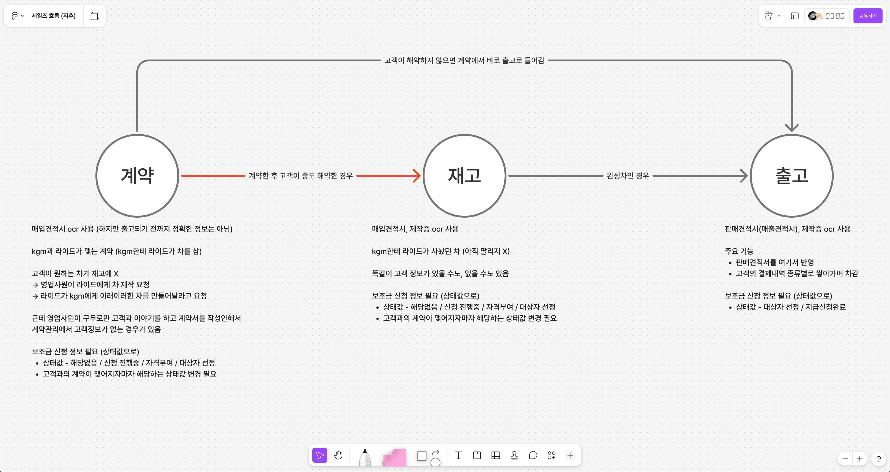
이해관계자 사이의 돈·차량·서류 흐름 도식화
제조사(KGM) – 회사 – 영업사원 – 고객 사이에 차량과 돈, 서류가 어떻게 오가는지 플로우로 그렸습니다. 중간중간 붙은 메모는 영업팀 인터뷰에서 나온 예외 케이스들입니다.
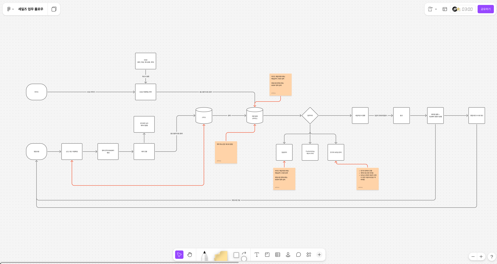
해피패스가 아니라 예외부터 설계
실무 시스템은 취소·환불에서 무너집니다. 영업사원 해제와 고객 해약 각각에 대해 환불/재등록 분기, 결제내역 처리, 취소 히스토리가 남는 위치까지 정의했고, 세금계산서·영수증·환불 각각의 결재(승인) 프로세스도 따로 그렸습니다.
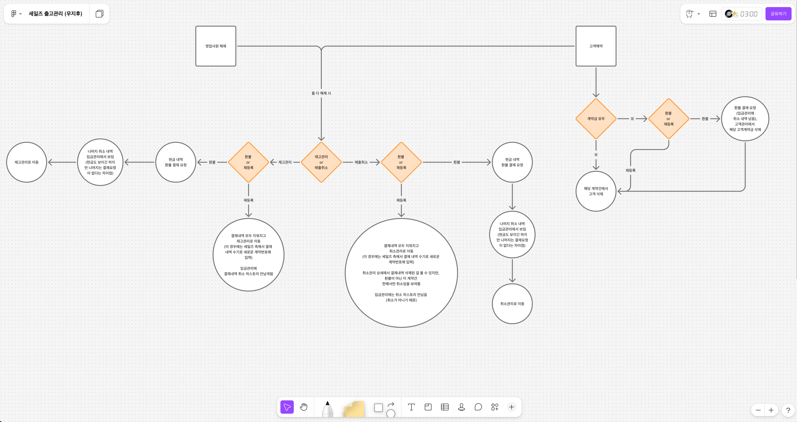
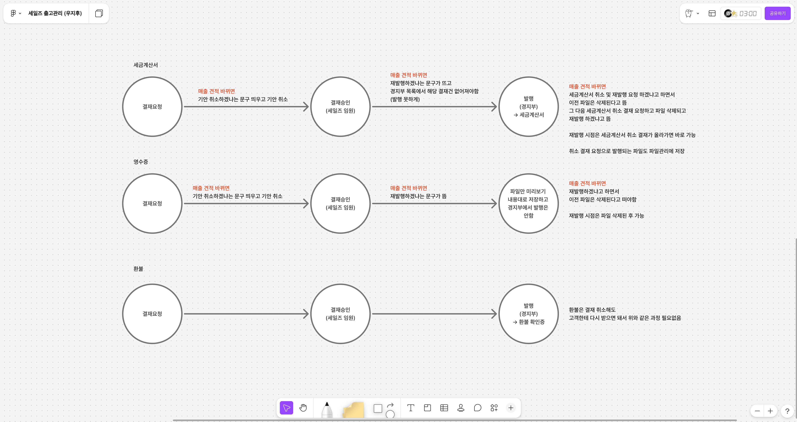
상태값과 계산 로직까지 문서로
보조금 신청 상태값, 손익 시뮬레이션 계산식(MSRP, 매입/판매 할인, 면세 기준)처럼 개발에서 다툼이 생기기 쉬운 규칙은 화면 시안 옆에 어노테이션으로 명시해 개발팀과 공유했습니다. 복잡한 화면은 시안 위에 동작·데이터 규칙을 직접 달았습니다.
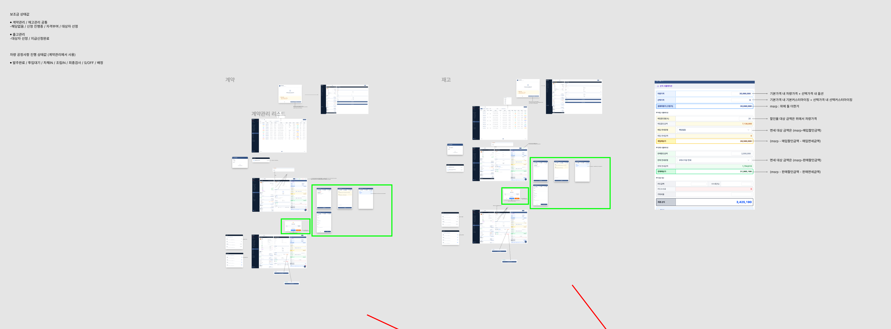
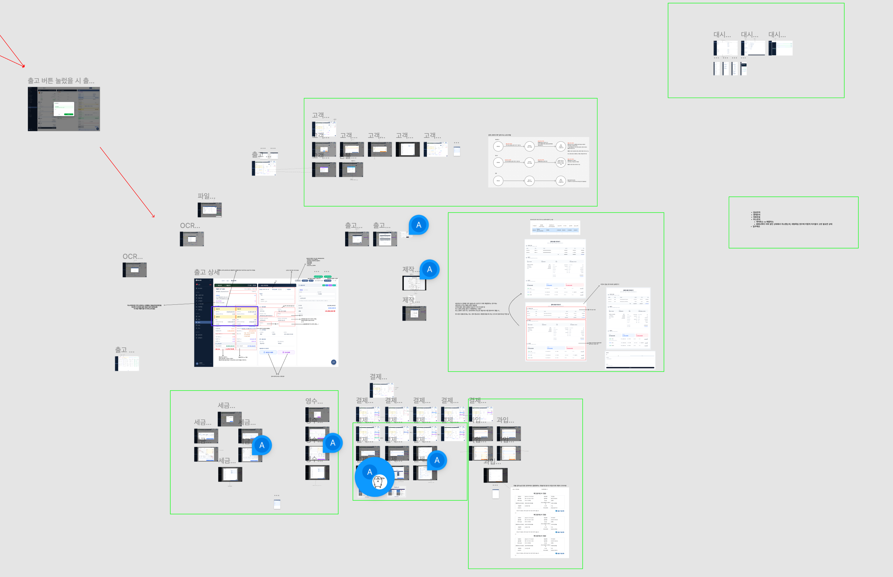
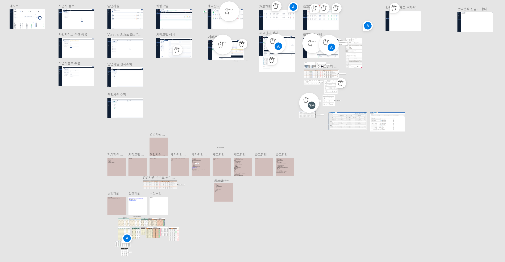
말로 안 되면, 클릭되는 프로토타입으로
문서와 시안으로 합의가 안 되는 부분은 AI 프로토타이핑 도구로 동작하는 가짜 제품을 만들어 URL로 공유했습니다. 영업팀은 직접 클릭해 보며 "이게 아니라 이거"라고 말할 수 있게 됐고, 개발팀은 구현 전에 화면 구조를 미리 파악할 수 있었습니다. 프로토타입 버전이 900을 넘길 만큼 고치고 또 고쳤습니다.
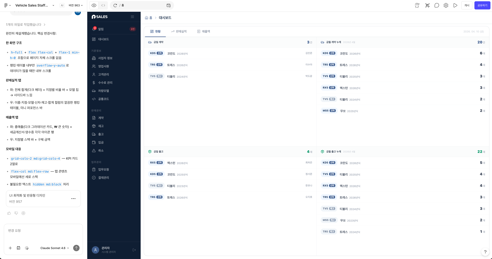
03결과물 — 엑셀이 하던 일을 시스템이 한다
기준정보(사업자·회원·영업사원·고객·차량 모델)부터 계약, 재고, 출고, 결제 내역, 문서 발행까지 영업 업무 전체를 다루는 웹앱으로 만들어졌습니다.
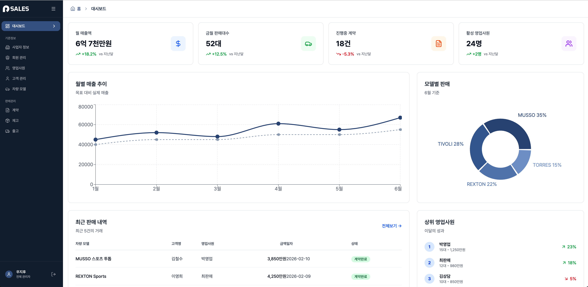
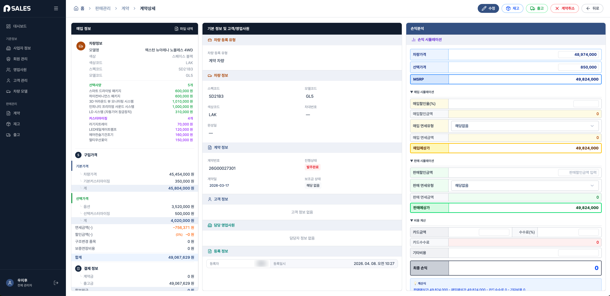
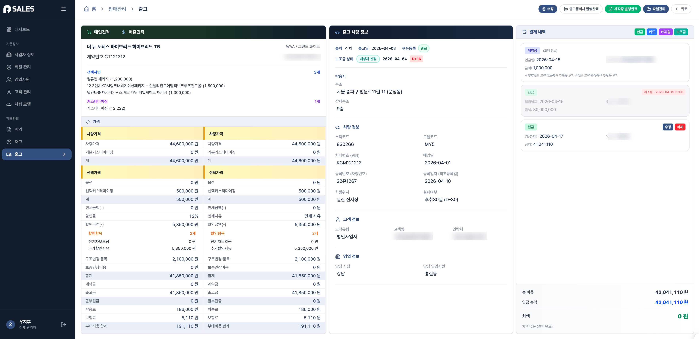
04Deep dive — 출고 문서 자동화
제가 직접 구현한 핵심 기능입니다. 수기로 만들던 출고품의서와 자동차제작증을 시스템 안에서 생성 → 검수 → 미리보기 → PDF → 발행까지 처리합니다. 단순 CRUD가 아니라 OCR 후처리, 민감정보 처리, PDF 생성, 발행 워크플로우 설계를 한 번에 다룬 작업입니다.
OCR로 읽고, 사람이 검수한다
기존 제작증 이미지/PDF를 업로드하면 LLM(Claude Sonnet 4.5) 기반 OCR 파이프라인이 파싱해 초안을 만듭니다(파이프라인은 백엔드 개발자가 구축). 다만 OCR 결과를 바로 쓰지 않고, 발행 전에 사람이 확인·수정하는 단계를 반드시 거치도록 설계했습니다. 자동화보다 중요한 건 실수 없이 검토할 수 있는 자리를 남기는 것이라고 판단했습니다.
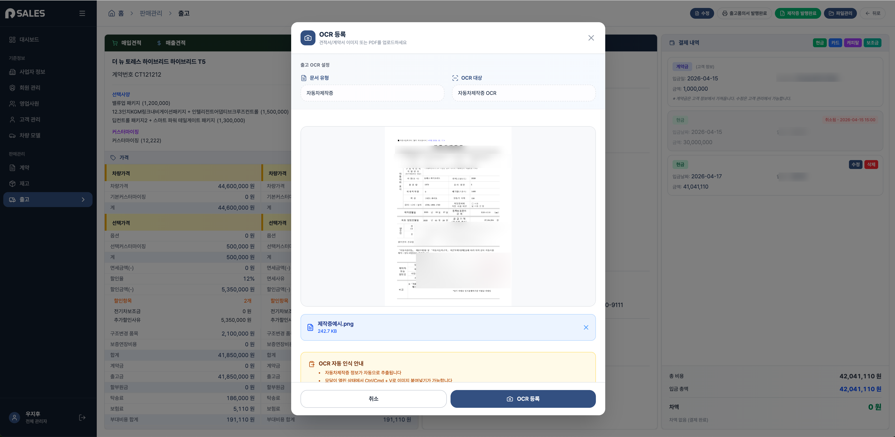
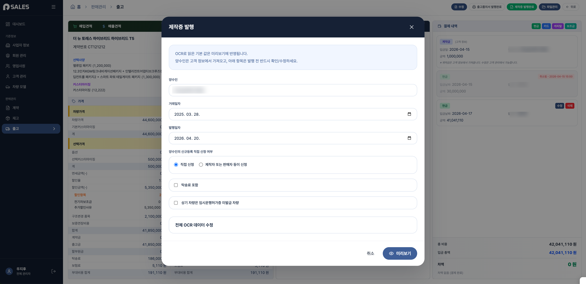
문서 미리보기 = PDF의 원본
제작증과 출고품의서는 실제 서식 그대로 DOM으로 렌더링합니다. PDF는 화면을 캡처하는 방식이 아니라 미리보기와 동일한 DOM을 기준으로 생성(html-to-image + jsPDF)해서, 사용자가 본 것과 발행되는 것이 항상 일치합니다. 문서 컴포넌트는 공통 구조로 분리해 두 문서가 재사용합니다.
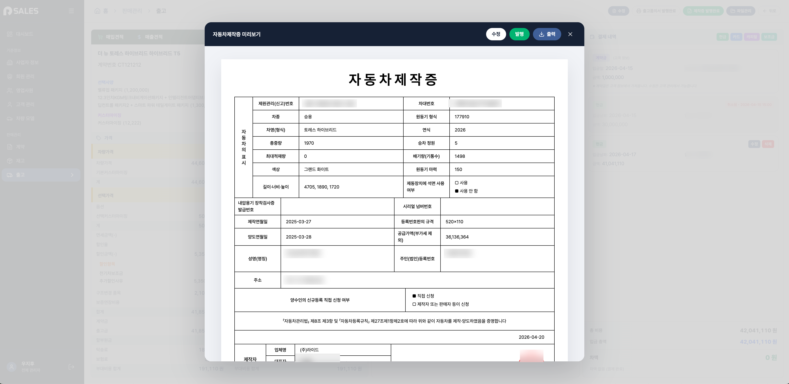
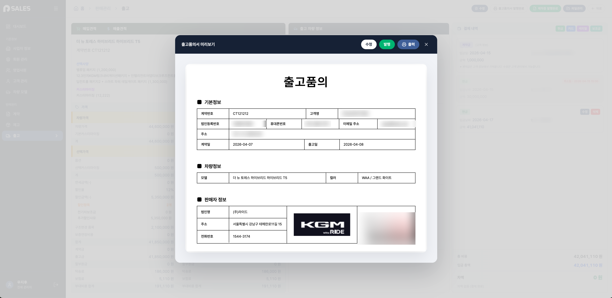
민감정보와 도메인 규칙
- 주민등록번호는 마스킹 상태로 다루다가, 발행 직전에만 비마스킹 API로 재조회해 최신 값을 반영 — 민감정보 노출은 최소화하면서 문서 정확도는 보장
- 개인 / 개인사업자 / 법인사업자에 따라 문서 표기 방식 분기
- 공동명의자의 이름·주민등록번호를 줄바꿈 형태로 문서에 반영
- 공급가액 계산에 탁송료 포함 여부, 보험료, 구조변경 금액, 부가세 제외 기준까지 반영
- 발행일자와 양도일자를 분리해 반영
발행된 문서는 출고 건에 매핑
생성·발행된 문서는 파일 유형별로 출고 건에 매핑되어, 계약서·견적서·제작증·품의서·영수증을 한 화면에서 찾을 수 있습니다.
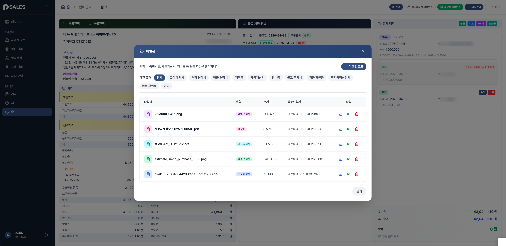
05기술 스택
06배운 것
- 기획은 언어를 정리하는 일에서 시작한다. 용어가 합의되지 않으면 화면을 아무리 그려도 요구사항은 계속 흔들린다.
- 만들 수 있는 사람이 기획하면 조정이 빨라진다. 구현 비용을 아는 상태에서 협상하면, 커트할 것과 반영할 것이 그 자리에서 정리된다.
- 자동화보다 중요한 건 검수의 자리다. OCR·자동 생성 문서처럼 틀리면 안 되는 것일수록, 사람이 확인하는 단계를 워크플로우에 심어야 한다.